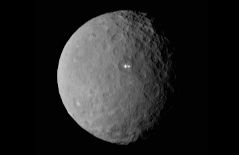

Ceres
Click on Ceres in the model to learn more!

The First Dwarf Planet
Ceres was the first object discovered in the asteroid belt. Ceres is referred to as a dwarf planet, an object that isn't big enough to be classified a planet, but still too large to be an ateroid. Another prominent dwarf planet is Pluto.
Ceres is the largest object in the asteroid belt, comprising 25 percent of the asteroid belt's total mass. To date NASA has launched one mission to Ceres.
Atmosphere and Temperature
Ceres is too small to hold an atmosphere with its gravitational pull. Temperatures on Ceres vary wildly from a cold -100 degrees Fahrenheit to a colder -225 degrees Fahrenheit.
Gravity
Due to its small size, Gravity on Ceres is very weak. The gravitational constant of Ceres is 0.27 m/s^2 compared to the 9.81 m/s^2 constant of Earth. This means you would weight 97% less on Ceres.
Moons
Ceres is Incredibly small and lacks the gravity necessary to capture and hold a moon. Therefore Ceres has no moons.